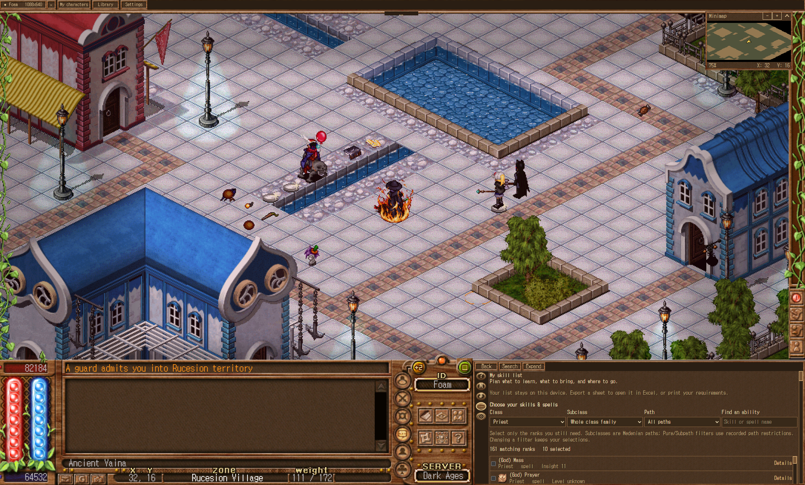

EXPANDED PLAY AREA
ORIGINAL PLAY AREA
+162.5%
more map area · 2.62× the original view
+72.7%
map width
+51.9%
map height
At 100% play zoom.
Original HUD and integrated Library stay available.
Comparison excludes display upscaling.